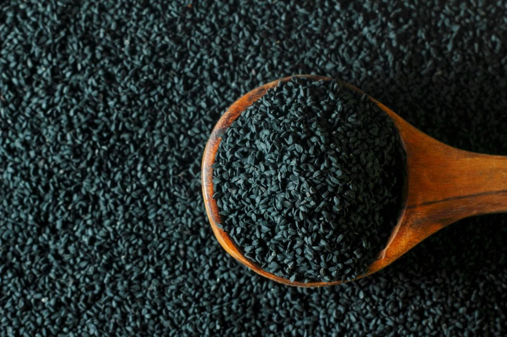
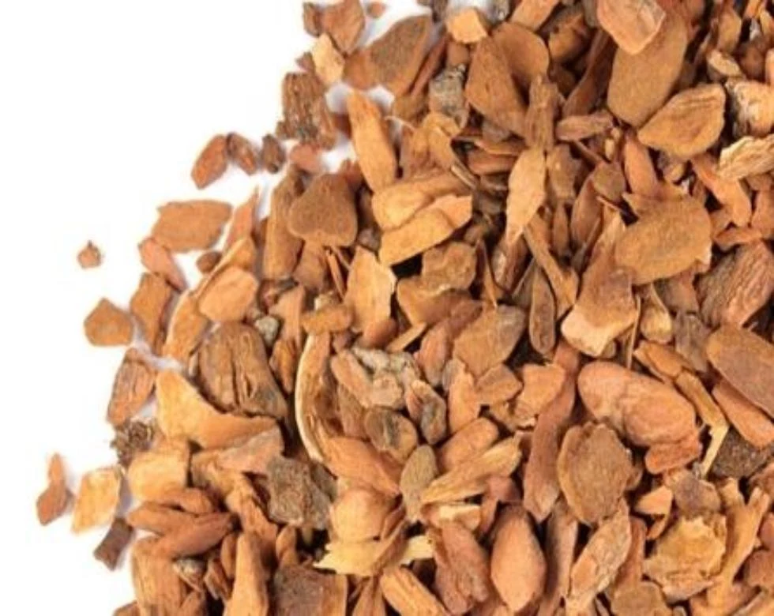
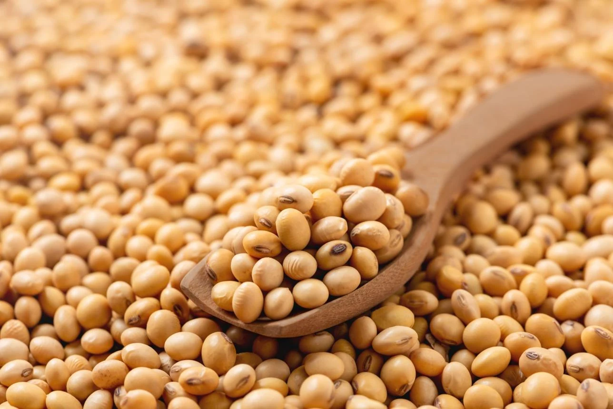
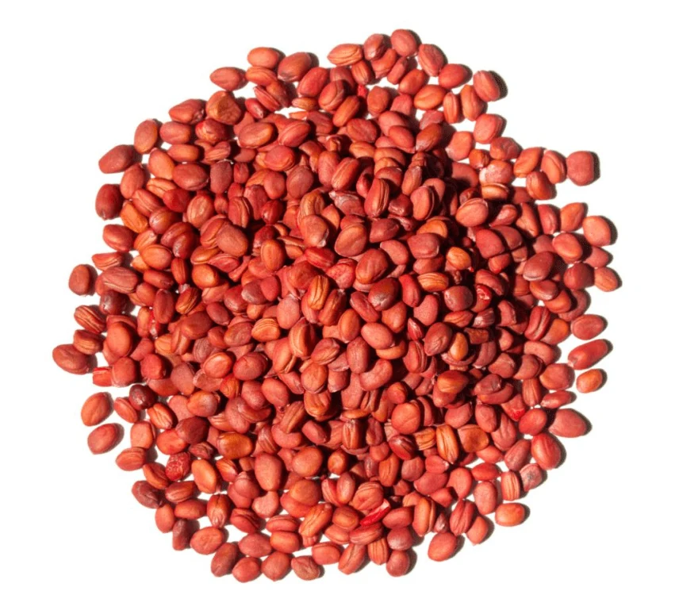
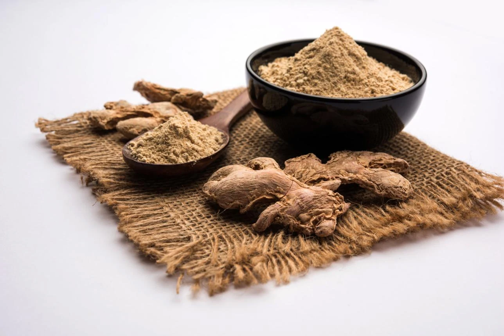

Indications
- Stopped or irregular menstruationमासिक धर्म का रुकना या अनियमित होना
- Scanty menstrual flowकम मासिक स्राव
- Painful menstruationदर्दयुक्त मासिक धर्म

M.C Plus is a specialized Ayurvedic proprietary medicine formulated to support women's menstrual disorders. Designed for menstrual irregularities, these capsules leverage a traditional blend of botanical extracts to help regulate and restore a healthy monthly cycle.
Ladies only
Four teaspoons (20 mL) three times daily for at least two days after meals with warm water or milk.

Kalaunji (Nigella sativa)
Kalonji (Black Seed) may help support immunity, digestion, and heart health.

Kapasmool (Gossypium herbaceum)
Kapasmool supports women's health, digestion, and pain relief.
Olatkambal (Abroma augusta)
Olatkambal root supports women's reproductive health and healthy menstrual cycles.

Gajar Seed (Daucus carota)
Gajar seeds support digestion, urinary health, and body balance.
Indrayan (Citrullus colocynthis)
Indrayan supports detoxification and digestive health.

Soya (Glycine max)
Soya seeds are rich in protein, fiber, vitamins, and antioxidants.

Kala Til (Sesamum indicum)
Kala Til (Black Sesame) supports bone strength, heart health, and digestion.

Muli (Raphanus sativus)
Muli seeds support digestion and liver function.

Sonth (Zingiber officinale)
Sonth (Dry Ginger) improves digestion and reduces inflammation.